Photographic evidence of the bloody crackdown on peaceful protesting Tibetan at Ngaba County, Sichuan Province, on 16 March 2008. source: Tibetan centre for human rights and democracy
| 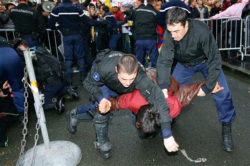
An activist of the France Tibet association, center, is being taken away by police officers during a demonstration against the violence in Tibet, Sunday, March 16, 2008 near the Chinese embassy in Paris. Violence spilled over from Tibet into neighboring provinces Sunday as Tibetan protesters defied a Chinese government crackdown while the Dalai Lama warned that the area faced "cultural genocide", and appealed to the world for help. (AP Photo/Jacques Brinon) |
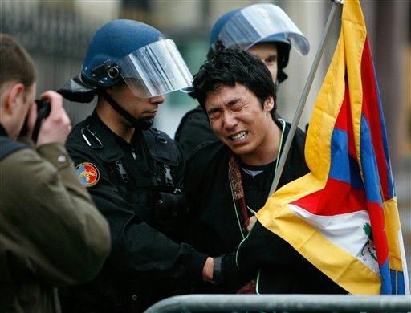
An activist of the France Tibet association, foreground right, holding a flag of Tibet, reacts as he is held by riot police officers as a press photographer takes a photo, left, during a demonstration of the association's militants against the violence in Tibet, in front of the Chinese embassy in Paris, Sunday, March 16, 2008. Violence spilled over from Tibet into neighboring provinces Sunday as Tibetan protesters defied a Chinese government crackdown while the Dalai Lama warned that the area faced "cultural genocide" and appealed to the world for help. (AP Photo/Jacques Brinon) |
| 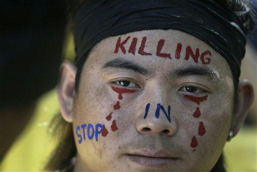
A Tibetan protestor takes part in a protest in New Delhi, India, Sunday, March 16, 2008. Nearly 2,000 Tibetan exiles, the public voice of a region now largely sealed off from the rest of the world rallied Sunday and burned Chinese flags, ramping up their protests on behalf of demonstrators inside Chinese-ruled Tibet. (AP Photo/Mustafa Quraishi) |
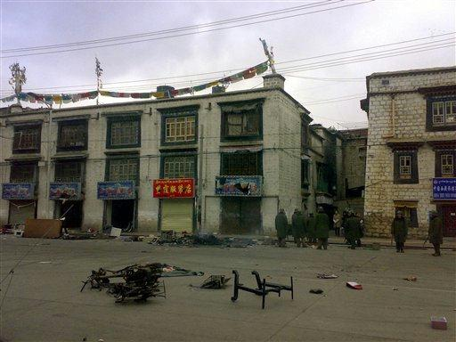
Chinese soldiers search protesters from building to building in Lhasa, capital of Tibet Autonomous Region, China on Saturday March 15, 2008. Hundreds of armed police and soldiers patrolled the streets of Lhasa and enforced a strict curfew Sunday in a security clampdown on the Tibetan capital following violent protests that drew negative publicity for China ahead of the Beijing Olympics. (AP Photo) ** CHINA OUT ** |
| 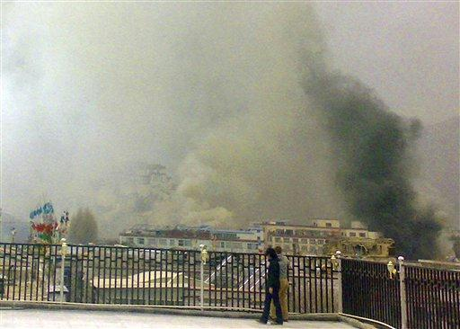
Smoke cover the center of Lhasa, capital of Tibet Autonomous Region, China as the town's land mark Potala Palace, left, is barely seen, center left, on Friday March 14, 2008. Hundreds of armed police and soldiers patrolled the streets of Lhasa and enforced a strict curfew Sunday in a security clampdown on the Tibetan capital following violent protests that drew negative publicity for China ahead of the Beijing Olympics. (AP Photo) ** CHINA OUT ** |
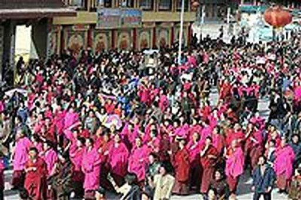
In this photo released by the Free Tibet Campaign, monks from the Labrang Monastery protest on a street in Xiahe, in China's Gansu province Friday March 14, 2008. (AP Photo/Free Tibet Campaign, HO) ** NO SALES ** |
| 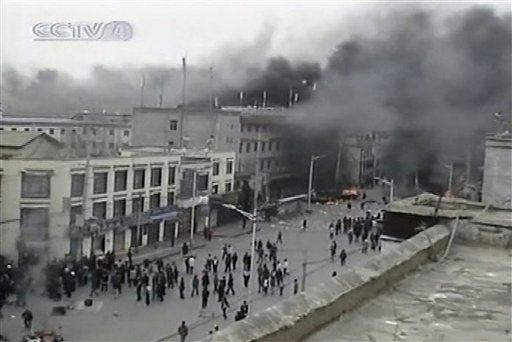
In this video image taken on Saturday, March 15, 2008, from Chinese television CCTV, demonstrators are seen on a street in Lhasa, capital of southwest China's Tibet Autonomous Region. China moved Saturday to quell the largest and most violent protests against its rule in Tibet in nearly two decades after demonstrators rampaged through Lhasa in an uprising that left at least 10 people dead. (AP Photo/CCTV via APTN) ** TV OUT, CHINA OUT **. Captured by Chinese TV but censored on other sites with differeing context. |
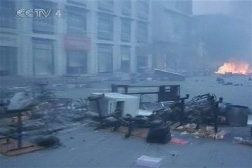
In this video image taken on Saturday, March 15, 2008, from Chinese television CCTV, debris and fire are seen on a street in Lhasa, capital of southwest China's Tibet Autonomous Region. China moved Saturday to quell the largest and most violent protests against its rule in Tibet in nearly two decades after demonstrators rampaged through Lhasa in an uprising that left at least 10 people dead. (AP Photo/CCTV via APTN) ** TV OUT, CHINA OUT **. Captured by Chinese TV but censored on other sites with differeing context. |
![[Image]](pict0.jpg)
In this video image taken on Saturday, March 15, 2008, from Chinese television CCTV, smoke and fire are seen on a street in Lhasa, capital of southwest China's Tibet Autonomous Region on Friday, March 14. China moved Saturday to quell the largest and most violent protests against its rule in Tibet in nearly two decades after demonstrators rampaged through Lhasa in an uprising that left at least 10 people dead. (AP Photo/CCTV via APTN) ** TV OUT, CHINA OUT **. Captured by Chinese TV but censored on other sites with differeing context. |
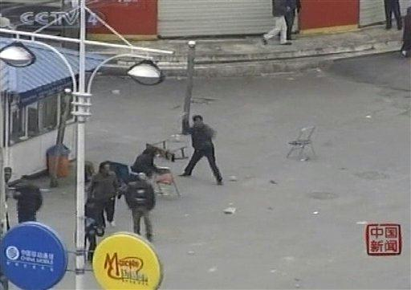
In this video image taken on Saturday, March 15, 2008, from Chinese television CCTV, demonstrators throw debris on a street in Lhasa, capital of southwest China's Tibet Autonomous Region Friday, March 14, 2008. China moved Saturday to quell the largest and most violent protests against its rule in Tibet in nearly two decades after demonstrators rampaged through Lhasa in an uprising that left at least 10 people dead. (AP Photo/CCTV via APTN) ** TV OUT, CHINA OUT **. Captured by Chinese TV but censored on other sites with differeing context. |
| 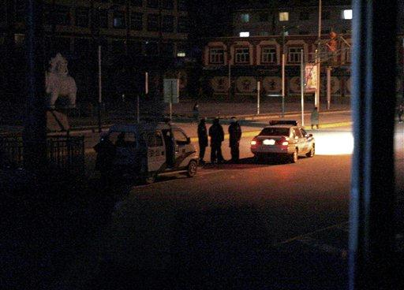
Police officers, standing guard next to their car, are seen through a broken glass door of a hotel after riot broke out in Xiahe, Gansu Province, China, Saturday, March 15, 2008. In the town of Xiahe, where hundreds of Tibetans marched Friday, clashes were reported Saturday between monks and security forces. (AP Photo/Andy Wong) |
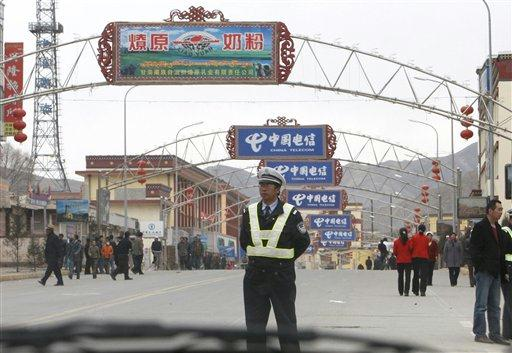
A Chinese police stands guard in middle of the road as they seal off the road heading to historic Labrang Monastery in Xiahe, Gansu Province, China, Saturday, March 15, 2008. Riot police been deployed to seal off and bar from tourists to go in after riot broke out this morning. (AP Photo/Andy Wong) |
| 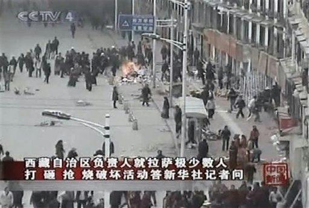
In this video image taken on Saturday, March 15, 2008, from Chinese television CCTV, demonstrators are seen on a street in Lhasa, capital of southwest China's Tibet Autonomous Region. China moved Saturday to quell the largest and most violent protests against its rule in Tibet in nearly two decades after demonstrators rampaged through Lhasa in an uprising that left at least 10 people dead. (AP Photo/CCTV via APTN) ** TV OUT, CHINA OUT **. Captured by Chinese TV but censored on other sites with differeing context. |
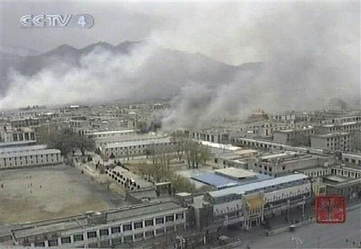
In this video image released on Saturday, March 15, 2008, by Chinese television CCTV, smoke rise from a number of buildings in Lhasa, capital of southwest China's Tibet Autonomous Region Friday, March 14, 2008. China moved Saturday to quell the largest and most violent protests against its rule in Tibet in nearly two decades after demonstrators rampaged through Lhasa in an uprising that left at least 10 people dead. (AP Photo/CCTV via APTN) ** TV OUT, CHINA OUT **. Captured by Chinese TV but censored on other sites with differeing context. |
| 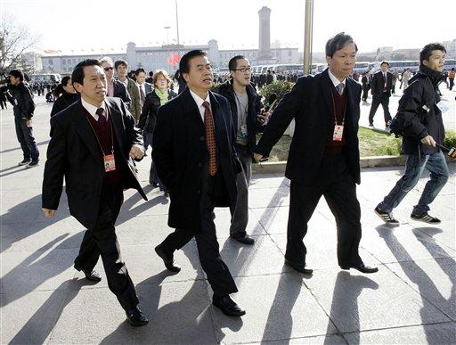
Communist Party Secretary General of Tibet Zhang Qingli, second left, arrives for a session of the National People's Congress in Beijing's Great Hall of the People Saturday March. 15, 2008. Zhang, Tibet's most powerful official, refused to comment on the unrest in Tibet. (AP Photo/Oded Balilty) |
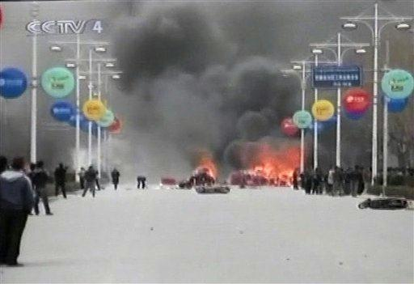
In this video image taken on Saturday, March 15, 2008, from Chinese television CCTV, some demonstrators are seen with fire and heavy smoke on a street in Lhasa, capital of southwest China's Tibet Autonomous Region. China moved Saturday to quell the largest and most violent protests against its rule in Tibet in nearly two decades after demonstrators rampaged through Lhasa in an uprising that left at least 10 people dead. (AP Photo/CCTV via APTN) ** TV OUT, CHINA OUT **. Captured by Chinese TV but censored on other sites with differeing context. |
![[Image]](pict20.jpg)
In this video image released on Saturday, March 15, 2008, by Chinese television CCTV, demonstrators try to turn over another car in Lhasa, capital of southwest China's Tibet Autonomous Region. China moved Saturday to quell the largest and most violent protests against its rule in Tibet in nearly two decades after demonstrators rampaged through Lhasa in an uprising that left at least 10 people dead. (AP Photo/CCTV via APTN) ** TV OUT, CHINA OUT **. Captured by Chinese TV but censored on other sites with differeing context. |
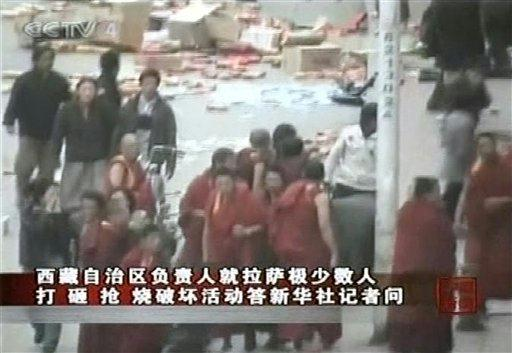
In this video image taken from Chinese television CCTV on Saturday, March 15, 2008, monks are seen on a street in Lhasa, capital of southwest China's Tibet Autonomous Region. China moved Saturday to quell the largest and most violent protests against its rule in Tibet in nearly two decades after demonstrators rampaged through Lhasa in an uprising that left at least 10 people dead. (AP Photo/CCTV via APTN) ** TV OUT, CHINA OUT **. Captured by Chinese TV but censored on other sites with differeing context. |
| 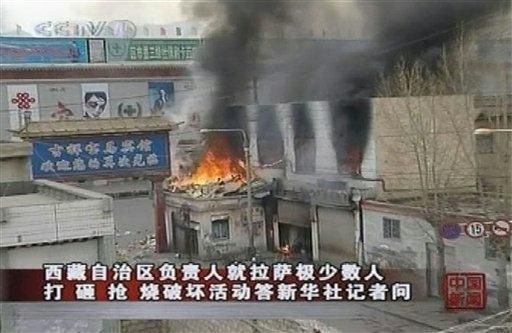
In this video image released on Saturday, March 15, 2008, by Chinese television CCTV, a burning building is seen in Lhasa, capital of southwest China's Tibet Autonomous Region. China moved Saturday to quell the largest and most violent protests against its rule in Tibet in nearly two decades after demonstrators rampaged through Lhasa in an uprising that left at least 10 people dead. (AP Photo/CCTV via APTN) ** TV OUT, CHINA OUT **. Captured by Chinese TV but censored on other sites with differeing context. |
![[Image]](pict23.jpg)
In this video image taken on Saturday, March 15, 2008, from Chinese television CCTV, some demonstrators are seen with fire and heavy smoke on a street in Lhasa, capital of southwest China's Tibet Autonomous Region. China moved Saturday to quell the largest and most violent protests against its rule in Tibet in nearly two decades after demonstrators rampaged through Lhasa in an uprising that left at least 10 people dead. (AP Photo/CCTV via APTN) ** TV OUT, CHINA OUT **. Captured by Chinese TV but censored on other sites with differeing context. |
| 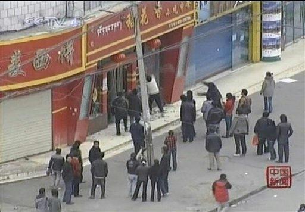
In this video image released on Saturday, March 15, 2008, by Chinese television CCTV, some demonstrators break glass window in shop front in Lhasa, China. China moved Saturday to quell the largest and most violent protests against its rule in Tibet in nearly two decades after demonstrators rampaged through Lhasa in an uprising that left at least 10 people dead. (AP Photo/CCTV via APTN) ** TV OUT, CHINA OUT **. Captured by Chinese TV but censored on other sites with differeing context. |
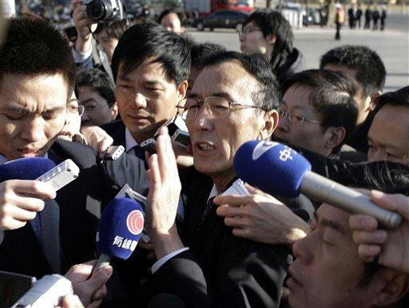
Champa Phuntsok, chairman of the Tibet Autonomous Region, speaks to reporters before a session of the National People's Congress in Beijing Saturday, March 15, 2008. "We did not open fire, however we will deal harshly with these criminals who are carrying out activities to split the nation," Phunstok has told The Associated Press on the sidelines of China's annual legislative session Saturday, a day after an anti-government protest in Lhasa turned violent. (AP Photo/Oded Balilty) |
| 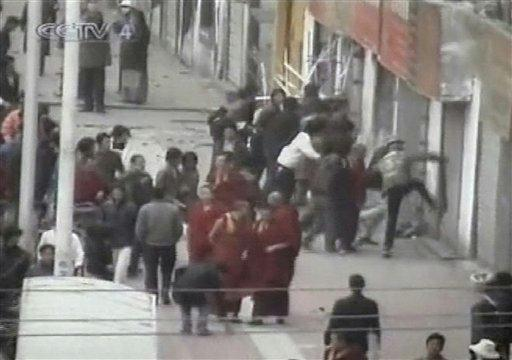
In this video image released on Saturday, March 15, 2008, by Chinese television CCTV, some demonstrators kick a building front in Lhasa, capital of southwest China's Tibet Autonomous Region. China moved Saturday to quell the largest and most violent protests against its rule in Tibet in nearly two decades after demonstrators rampaged through Lhasa in an uprising that left at least 10 people dead. (AP Photo/CCTV via APTN) ** TV OUT, CHINA OUT **. Captured by Chinese TV but censored on other sites with differeing context. |
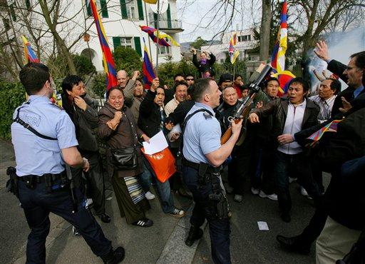
Tibetan protesters scuffle with police officers during a sympathy protest in front of the Chinese consulate in Zurich, Switzerland, Saturday, March 15, 2008. China locked down the Tibetan capital Saturday after the largest and most violent protests against its rule in the region in nearly two decades. At least 10 people were killed when demonstrators rampaged through Lhasa, dashing Beijing's plans for a smooth run-up to the Olympics in August. (AP Photo/Keystone/Eddy Risch) |
| 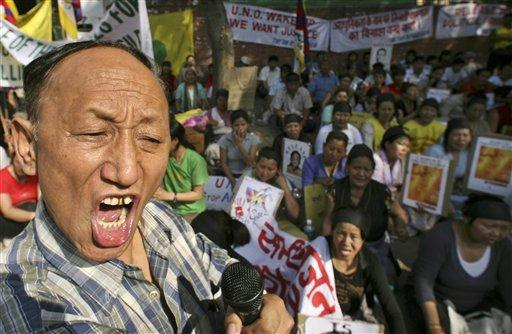
A Tibetan man shouts anti-China slogans as scores of Tibetans sit in for an indefinite hunger strike to protest against China's clamp down operations on Tibetan protesters in Lhasa and other parts of China, in New Delhi, India, Saturday March 15, 2008. Dozens of protesters in India launched a new march to Tibet on Saturday, days after more than 100 Tibetan exiles were arrested by authorities during a similar rally. (AP Photo/Saurabh Das) |
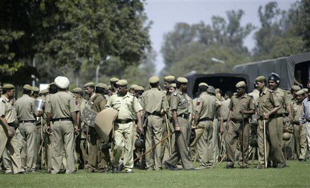
Indian police gather outside the Chinese Embassy in New Delhi, India, Saturday, March 15, 2008. Dozens of protesters in India launched a new march to Tibet on Saturday, days after more than 100 Tibetan exiles were arrested by authorities during a similar rally. (AP Photo/Mustafa Quraishi) |
| 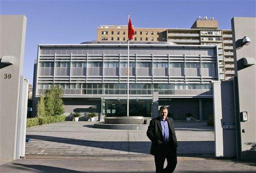
A plain clothes police officer walks out of the Chinese consulate after police clashed with pro-Tibetan protesters Saturday, March 15, 2008, outside the consulate in Sydney, Australia. About 40 noisy protesters of all ages, including elderly women and young children, gathered at the inner-city consulate. (AP Photo/Rick Rycroft) |
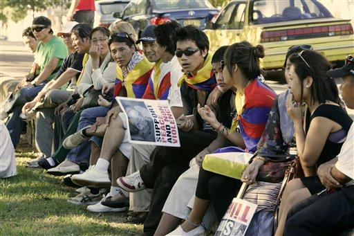
Members of the Tibetan community gather in a park after the police clashed with the protesters Saturday, March 15, 2008, outside the Chinese consulate in Sydney, Austrtalia. About 40 noisy protesters of all ages, including elderly women and young children, gathered at the inner-city consulate. (AP Photo/Rick Rycroft) |
| 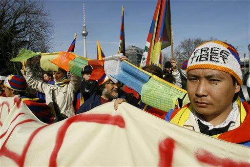
Protestors demonstrate for a free Tibet in front of the Chinese embassy in Berlin, Germany, Saturday, March 15, 2008, after recent clashes between Tibetans and the Chinese authorities in Tibet. (AP Photo/Herbert Knosowski) |
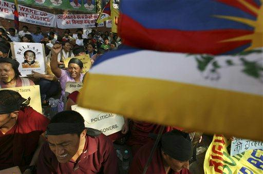
Tibetans sit in for an indefinite hunger strike to protest against China's clamp down operations on Tibetan protesters in Lhasa and other parts of China, in New Delhi, India, Saturday, March 15, 2008. Dozens of protesters in India launched a new march to Tibet on Saturday, days after more than 100 Tibetan exiles were arrested by authorities during a similar rally. (AP Photo/Saurabh Das) |
| 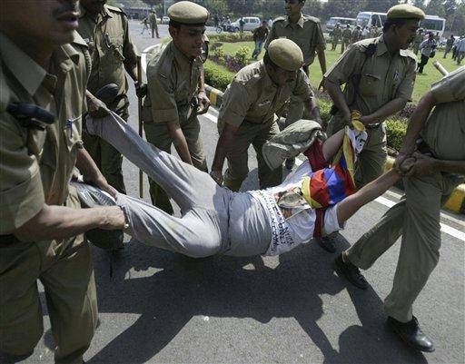
Indian police drag a Tibetan protester outside the Chinese Embassy in New Delhi, India, Saturday, March 15, 2008. Dozens of protesters in India launched a new march to Tibet on Saturday, days after more than 100 Tibetan exiles were arrested by authorities during a similar rally. (AP Photo/Mustafa Quraishi) |
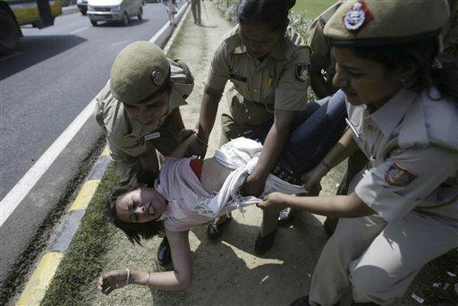
Indian police drag a Tibetan protester outside the Chinese Embassy in New Delhi, India, Saturday, March 15, 2008. Dozens of protesters in India launched a new march to Tibet on Saturday, days after more than 100 Tibetan exiles were arrested by authorities during a similar rally. (AP Photo/Mustafa Quraishi) |
| 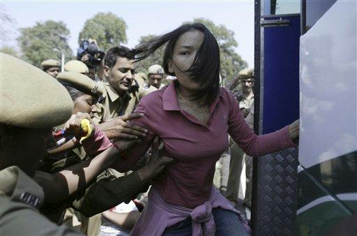
Indian police detain a Tibetan protester outside the Chinese Embassy in New Delhi, India, Saturday, March 15, 2008. Dozens of protesters in India launched a new march to Tibet on Saturday, days after more than 100 Tibetan exiles were arrested by authorities during a similar rally. (AP Photo/Mustafa Quraishi) |
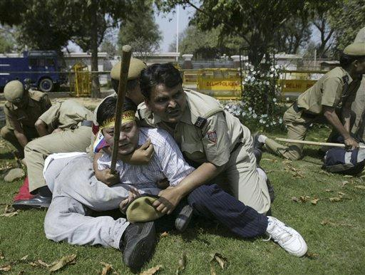
Indian police scuffle with Tibetan protesters outside the Chinese Embassy in New Delhi, India, Saturday, March 15, 2008. Dozens of protesters in India launched a new march to Tibet on Saturday, days after more than 100 Tibetan exiles were arrested by authorities during a similar rally. (AP Photo/Mustafa Quraishi) |
| 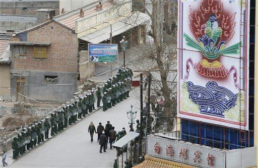
Chinese riot police with shield and batons stands guard on the road heading to historic Labrang Monastery in Xiahe, Gansu Province, China, Saturday, March 15, 2008. In the town of Xiahe, where hundreds of Tibetans marched Friday, clashes were reported Saturday between monks and security forces. (AP Photo/Andy Wong) |
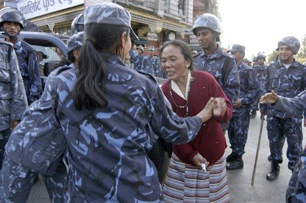
Nepalese police scuffle with a Tibetan protester outside the U.N. office in Katmandu, Nepal, Saturday, March 15, 2008. Police broke up a protest by 200 Tibetans in the Nepalese capital on Saturday, beating them with bamboo batons and arresting at least 20 of them. (AP Photo/Binod Joshi) |
| 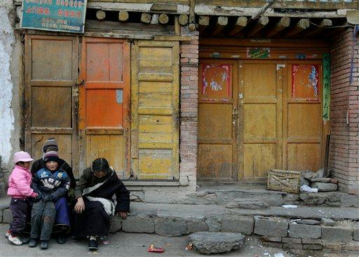
Tibetans sit in front of the shops closed after Chinese riot police seal off the road and town heading to historic Labrang Monastery in Xiahe, Gansu Province, China, Saturday, March 15, 2008. In the town of Xiahe, where hundreds of Tibetans marched Friday, clashes were reported Saturday between monks and security forces. (AP Photo/Andy Wong) |
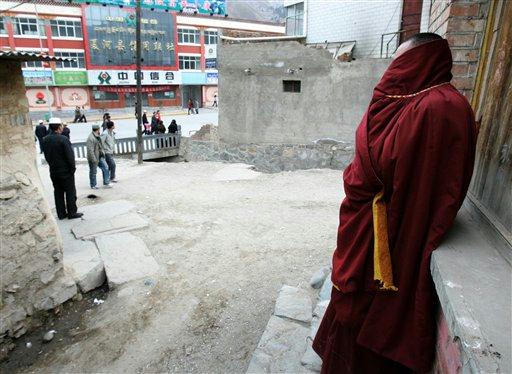
A Tibetan monk watches on the street after Chinese riot police seal off the road heading to historic Labrang Monastery in Xiahe, Gansu Province, China, Saturday, March 15, 2008. In the town of Xiahe, where hundreds of Tibetans marched Friday, clashes were reported Saturday between monks and security forces. (AP Photo/Andy Wong) |
| 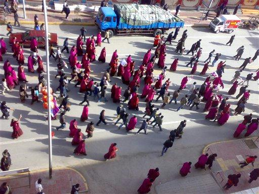
In this photo released by the Free Tibet Campaign, monks march in a street in Xiahe, in China's Gansu province Friday March 14, 2008. Disturbances continued Saturday in Tibetan areas outside the autonomous region, with police shutting off all access to the town of Xiahe in Gansu province, home to the major Tibetan Buddhist monastery of Labrang. (AP Photo/Free Tibet Campaign, HO) ** NO SALES ** |
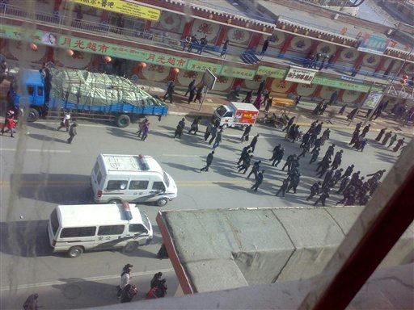
** CORRECTS DATELINE TO XIAHE, GANSU PROVINCE, CHINA NOT LHASA, TIBET **In this image made from video and provided by APTN, authorities walk down an avenue, Friday, March 14, 2008, in Gansu Province, Xiahe, China. Police fired tear gas to disperse Buddhist monks and others staging a second day of protests Saturday in western China in sympathy with anti-Chinese demonstrations in Lhasa, local residents said. (AP Photo/APTN) |
| 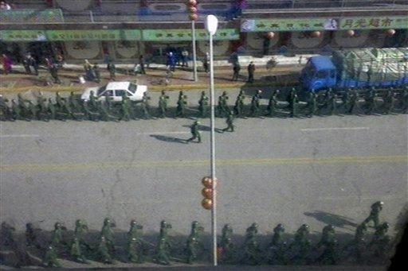
** CORRECTS DATELINE TO XIAHE, GANSU PROVINCE, CHINA NOT LHASA, TIBET **In this image made from video and provided by APTN, authorities walk down an avenue, Friday, March 14, 2008, in Gansu province, Xiahe, China. Police fired tear gas to disperse Buddhist monks and others staging a second day of protests Saturday in western China in sympathy with anti-Chinese demonstrations in Lhasa, local residents said. (AP Photo/APTN) |
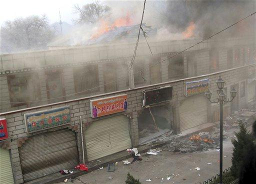
In this photo released by China's Xinhua News Agency, burning shops are seen in Lhasa, capital of southwest China's Tibet Autonomous Region, Friday, March 14, 2008. China moved Saturday to quell the largest and most violent protests against its rule in Tibet in nearly two decades after demonstrators rampaged through Lhasa in an uprising that left at least 10 people dead. (AP Photo/Xinhua, Gesang Dawa) |
| 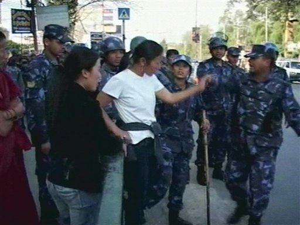
In this image made from video and provided by APTN, a protestor speaks with authorities, Friday, March 14, 2008, in Lhasa, Tibet. Police fired tear gas to disperse Buddhist monks and others staging a second day of protests Saturday in western China in sympathy with anti-Chinese demonstrations in Lhasa, local residents said. (AP Photo/APTN) Wikileaks correction to AP: This a nepalese sympathy demonstration. |
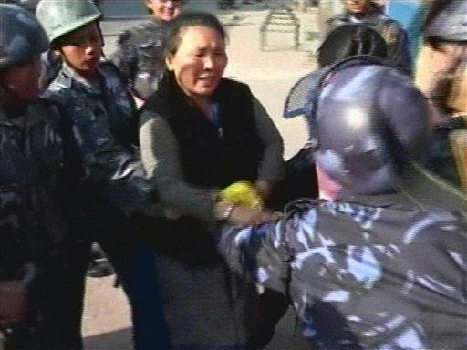
In this image made from video and provided by APTN, authorities wrestle with a protestor in an effort to take her flag Friday, March 14, 2008, in Lhasa, Tibet. Police fired tear gas to disperse Buddhist monks and others staging a second day of protests Saturday in western China in sympathy with anti-Chinese demonstrations in Lhasa, local residents said. (AP Photo/APTN) Wikileaks correction to AP: This a nepalese sympathy demonstration. |
| 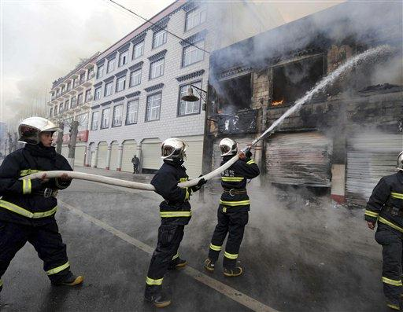
In this photo distributed by the official Chinese news agency, Xinhua, firefighters hose down the flame in Lhasa, capital of southwest China's Tibet Autonomous Region, on Friday March 14, 2008. Seven people have been confirmed dead in the riot that erupted in Lhasa Friday, Xinhua said. (AP Photo/Xinhua, Chogo) |
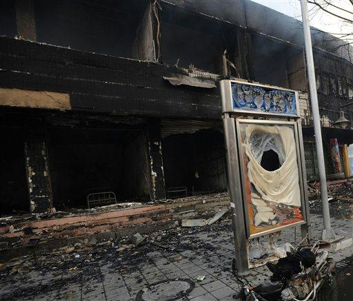
In this photo distributed by the official Chinese news agency, Xinhua, a burned bank is seen in Lhasa, capital of southwest China's Tibet Autonomous Region, on Friday March 14, 2008. Seven people have been confirmed dead in the riot that erupted in Lhasa Friday, Xinhua said. (AP Photo/Xinhua, Yang Guang) |
| 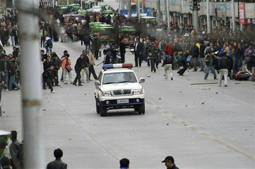
Protestors throw debris at a police vehicle, Friday, March 14, 2008, in Lhasa, Tibet. Protests led by Buddhist monks against Chinese rule in Tibet turned violent Friday, with shops and vehicles torched and gunshots echoing through the streets of the ancient capital, Lhasa. (AP Photo) |
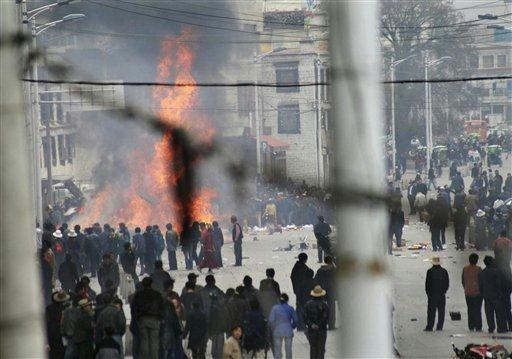
Protesters gather around burning debris in the streets of Lhasa, Tibet, Friday March 14, 2008. Protests led by Buddhist monks against Chinese rule in Tibet turned violent Friday, with shops and vehicles torched and gunshots echoing through the streets of the ancient capital, Lhasa. (AP Photo) |
| 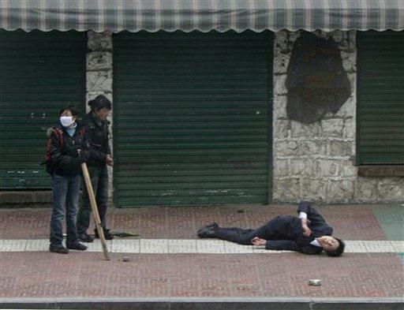
A man lies injured in the street during street protests, Friday, March 14, 2008, in Lhasa,Tibet. Protests led by Buddhist monks against Chinese rule in Tibet turned violent Friday, with shops and vehicles torched and gunshots echoing through the streets of the ancient capital, Lhasa. (AP Photo) |
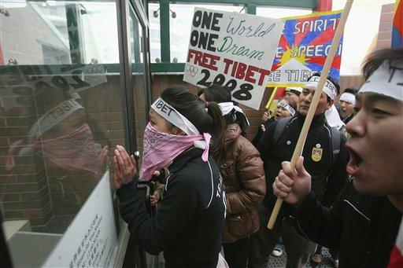
Tibetan rights protesters bang on the doors of the Chinese Consulate during a demonstration in Calgary, Canada, Friday March 14, 2008. The demonstrations were held in support of Buddhist monks in Tibet, whose protests against Chinese occupation flared into violence, with shops and vehicles burned and gunshots fired in the streets of the Tibetan capital, Lhasa. (AP Photo/The Canadian Press, Brett Gundlock, Calgary Sun) |
| 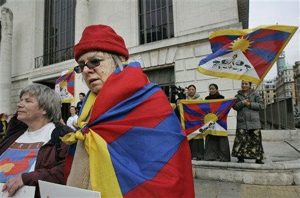
A demonstrator in solidarity with the protestors in Tibet, draped in a Tibetan flag, pauses during a demonstration across the street from the Chinese embassy in central London, Friday, March 14, 2008. Protests led by Buddhist monks against Chinese rule in Tibet turned violent Friday, with shops and vehicles torched and gunshots echoing through the streets of the ancient capital, Lhasa. A radio report said two people had been killed. ((AP Photo/Lefteris Pitarakis) |
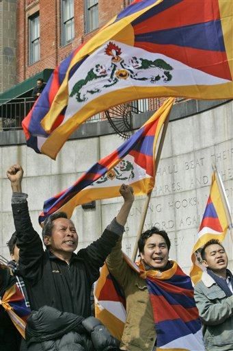
Protestors demonstrate outside the United Nations headquarters Friday, March 14, 2008 in New York. Dozens of Tibetans, young and old, held a noisy protest outside the United Nations.The demonstrations were held in support of Buddhist monks in Tibet, whose protests against Chinese occupation flared into violence, with shops and vehicles burned and gunshots fired in the streets of the Tibetan capital, Lhasa. (AP Photo/Mary Altaffer) |
| 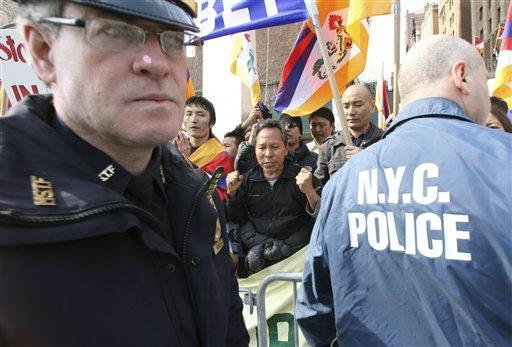
Protestors demonstrate outside the United Nations headquarters Friday, March 14, 2008 in New York. Dozens of Tibetans, young and old, held a noisy protest outside the United Nations. The demonstrations were held in support of Buddhist monks in Tibet, whose protests against Chinese rule which flared into violence, with shops and vehicles burned and gunshots fired in the streets of the Tibetan capital, Lhasa. (AP Photo/Mary Altaffer) |
Protestors demonstrate outside the United Nations headquarters Friday, March 14, 2008 in New York. Dozens of Tibetans, young and old, held a noisy protest outside the United Nations on Friday. The demonstrations were held in support of Buddhist monks in Tibet, whose protests against Chinese rule flared into violence, with shops and vehicles burned and gunshots fired in the streets of the Tibetan capital, Lhasa. (AP Photo/Mary Altaffer) |
WikiLeaks would like to thank the Associated Press and John Young for assisting with this collation.